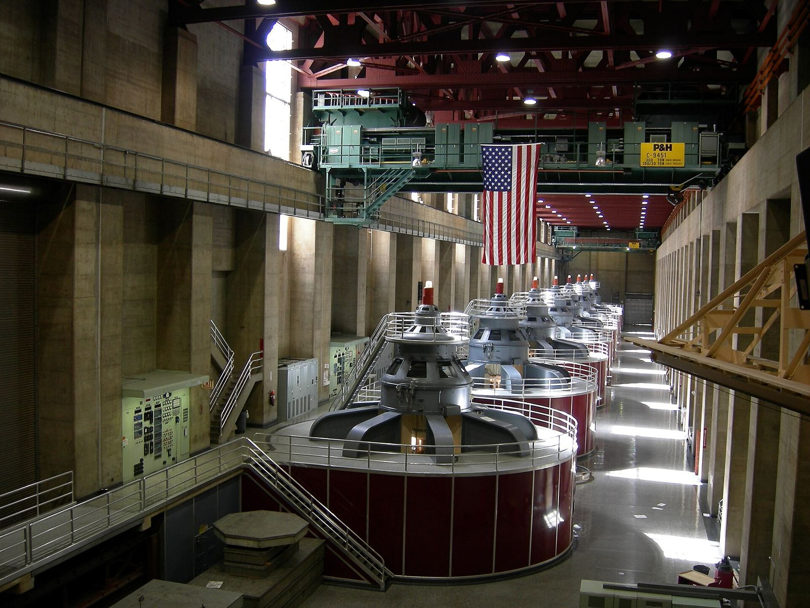

OpenAI 发布《国家社区契约》与算力园区政策蓝图：自有园区承诺自付电费、公开水电噪声与用工，并吁立规保护居民


OpenAI 于 2026 年 11 月 5 日发布面向未来自有/自运营园区的《国家社区契约》（National Community Compact），以及供政策制定者参考的《算力园区政策蓝图》（Compute Campus Policy Blueprint）。公司承诺自付全部电力与基础设施费用并提供财务保障；制定用水计划、优先闭环/低耗水冷却，并公开站点级用水与用电数据；公布建设方案与独立噪声研究；除狭窄的安全与商业秘密情形外，不对公职人员使用保密协议；公布预期岗位、与工会及培训方合作，并发布年度招聘报告。
公司承诺自付全部电力与基础设施费用并提供财务保障
文中举例地方投入：佐治亚州 Effingham 约 480 万美元免费校园餐，覆盖约 1.4 万名学生；俄亥俄州 Pike County 与 SB Energy 合作约 600 万美元托儿支持。蓝图吁公用事业监管机构要求大客户承担电网成本，并援引 Effingham 协议允许 Georgia Power 在高峰削减至多约 1,000 MW 负荷。相关 PDF 可自该博文页面获取。
摘记，不是官方媒体。承诺条款、金额与政策建议均出自 OpenAI 官方博文及所链 PDF；落地进度与地方协议执行以各方后续披露为准。